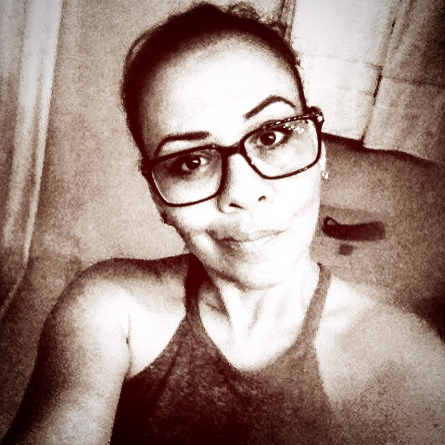

About Me
My professional expertise includes Graphic Design and Marketing Communication. I am a Graduate of Pratt Art Institute. My former roles have included: Creative Director of top 50 Industry Supplier (Jetline Promo), Product Designer for BSM International Consumer Goods and Sales/Marketing Manager of Freedom RFID Software.
I have an extensive skill set of Art and Design and member of the Charlotte Chapter of Graphic Art Guild, Charlotte Art League Member and McColl Center Member. As a branding and marketing specialist with experience as a multi-disciplinary graphic designer I have delivered creative and engaging solutions across brand identity, print, packaging, and digital media.
My hobbies are bodybuilding and competing in fitness competitions. As a member the Believe923 team in 2015 in which I took the Top 5 in the Transformation Division at the WBFF Orlando competition and won an invitation to World’s WBFF in Las Vegas. I have been a Zumba and Barre Instructor at the F.I.T. Factory and donate my time to teach Zumba at the ESL Hispanic Ministry at Harvest Church. In 2015 I was featured speaking on the topic of health and wellness on Jacquie Wayans Blog Talk Radio “Pressing Toward The Mark”. In the future, I plan on competing in the NPC bikini division.
In my free time, I enjoy outdoor adventures, refurbishing vintage furniture and paleo cooking